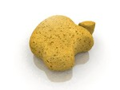

Le Spugne anche chiamati animali Poriferi, fanno parte del regno dei Parazoi. Sono ermafroditi e praticamente immortali. Se prendete una grattugia e la strofinate accuratamente, i minuscoli pezzetti si ricomporranno nuovamente a formare una nuova massa corporea. Adesso che ho nella vasca da bagno questi minuscoli pezzetti di spugna, mi spiegate come diavolo faccio a lavarmi?!